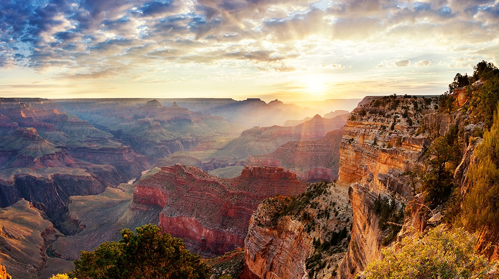

憧れの、世界遺産一度は行きたい海外の遺産・遺跡を厳選
世界遺産TOP５！！！
人生に一度は行きたい世界遺産。世界遺産2019年までの登録数は、なんと1,121件にものぼります。数ある中でも、ここだけは押さえておきたい！という場所を知りたい人は多いのではないでしょうか。そこで、「本当に行ってよかった」「涙が出た」など、旅のプロであるトラベル・コンシェルジュが絶賛の声をあげる、一度は行くべき世界遺産をランキングにまとめました！ぜひ参考にしてみてください。
モンサンミッシェル日帰りパリ 7日間116,800円～227,800円
モンサンミッシェルとその湾
ノルマンディーの湾にそびえる修道院。幻想的な姿で佇むモンサンミッシェルに「絵を観ているようだった」「夜のライトアップされた景色が神秘的！」などの声が多く集まりました。また、モンサンミッシェルは長い年月をかけて増築が重ねられ、中世の様々な建築様式が混ざり合っているのも特徴の1つです。「積み重ねてきた歴史に思いを馳せ、泣きそうになった」という人も。ぜひ歴史を調べてから、訪れてみてください。
好立地3つ星ホテルに滞在イスタンブール 5日間99,800円～159,800円
イスタンブール歴史地域
文化の中心地として栄え、歴史的建造物が多く残るイスタンブール旧市街地。アジアとヨーロッパの境界に位置するからこそ「地理的・文化的・宗教的な面白さが体験できる」と人気です。また、「ブルーモスクなど、当時の権威の象徴が街に溶け混んでいて印象的」という声や「港町らしい魚介系の料理が美味しい！」という声も。街全体に独特の雰囲気があり、異国情緒をたっぷりと味わうことができます。
世界遺産グリーン島に滞在グリーン島+ケアンズ99,800円～227,800円
グレートバリアリーフ
ケアンズの沖合に浮かぶ世界最大級のサンゴ礁地帯。全体の長さはおよそ2,000kmにも及び、約900の島が存在しています。その中でも人気なのはグリーン島。「白砂のビーチと透明度抜群の海は、息を飲むほどの絶景」「カラフルな熱帯魚を間近で見られるシュノーケリングが最高！」など、興奮の声が多く寄せられました。体験ダビングや、シーウォークも人気が高く、きらめく海中世界を満喫することができます。
世界遺産&ビーチ！ダナン観光付4日間49,700円～164,700円
古都ホイアン
「初めて訪れたのに懐かしくて涙が出た」そんな感想が飛び出すベトナムの古都ホイアン。毎月旧暦14日に行われるランタン祭りが有名で「淡く灯される町並みが綺麗」「川面に映るランタンが幻想的」とそのノスタルジックな景色に心奪われる人が続出。日にちを合わせられる方はぜひランタン祭りにご参加ください。
3都市周遊フリープラン5日間119,800円～199,800円
タージマハル
インドの代表的な建築物であるタージ・マハル。一見宮殿のように見えますが、ムガル帝国の第5代皇帝が亡くなった妻のために建てたお墓です。22年もの歳月をかけて建築されたこのお墓に「壮大な愛を感じる」「建てられた経緯を知ってさらに感動」という声が。インドの「愛の象徴」を、ぜひ歴史とともにご堪能ください。
>